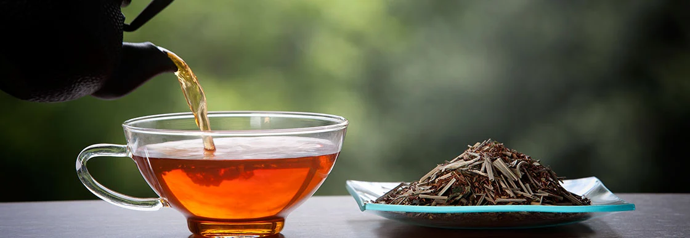
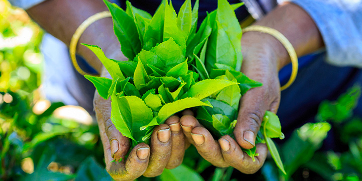
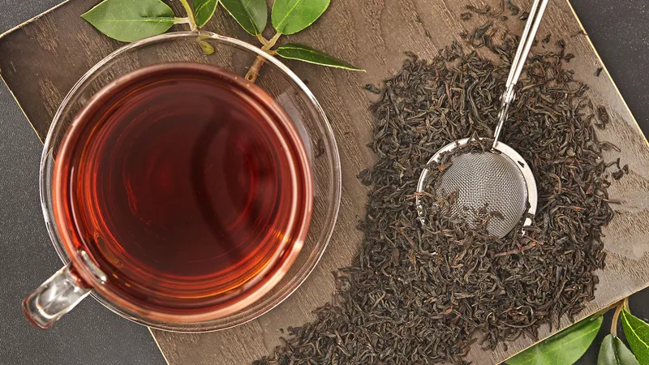
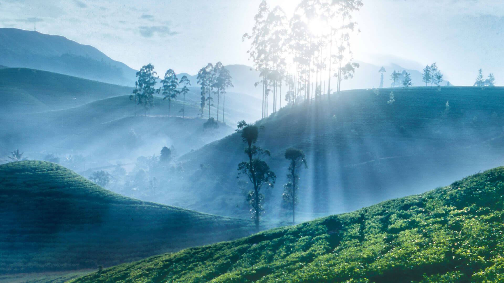
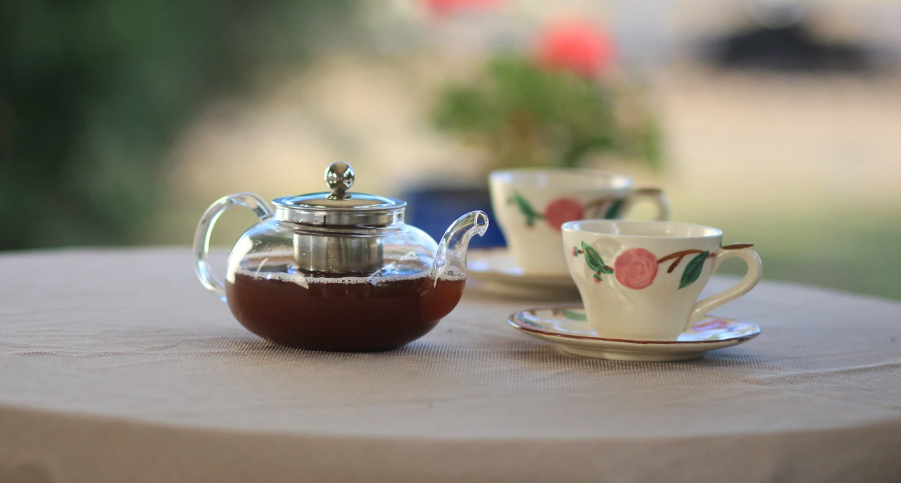

Introducing Sri Lankan tea
- Until the 1860s the main crop produced on the island of Sri Lanka, then Ceylon, was coffee.
- The owners of Loolecondera Estate had been interested in tea since the late 1850s. In 1866, James Taylor, a recently arrived Scot, was selected to be in charge of the first sowing of tea seeds in 1867. Taylor had acquired some basic knowledge of tea cultivation in North India and made some initial experiments in manufacture.
- His first teas were sold locally and were declared delicious.


- By 1872, Taylor had a fully equipped factory. Through his dedication and determination, Taylor was largely responsible for the early success of the tea crop in Ceylon.The first vessel recorded as carrying Ceylon tea to England was the steam-ship "Duke Argyll" in 1877.
- Rapid expansion of the Ceylon's tea industry in the 1870s and 80s brought a good deal of interest from the large British companies, which took over many of the small estates. Four estates were purchased by a grocer whose name is almost a synonym for tea: Thomas J. Lipton.
Ceylon tea as a brand
- Ceylon tea is both the brand of tea which is produced in Sri Lanka and a historic term describing tea from that land. The Sri Lanka Tea Board is the legal proprietor of the Lion Logo of Ceylon tea. In 2019, Sri Lanka was the fourth largest tea producer and the third largest tea exporter in the world. he Lion Logo has been registered in 98 countries as of 2016.
- Ceylon tea is a recognized tea because of its controlled production and should be sold in its value-refined form in order to yield higher margins. Ceylon Tea industry maintains the highest quality in the global tea market and ISO 3720 is the minimum standard applies for the products.
Ceylon tea as a market
- The market for pure teas such as "pure Ceylon tea" is considered a niche market, occupying only 10 percent of the global market. More than 50 percent of the tea exports of Sri Lanka are still in the traditional bulk tea while the value-added tea (green tea, flavored tea, organic tea, instant tea, iced tea, and ready-to-drink tea) exports account for 40 to 45 percent of total tea exports.However all types of value-added tea products yield a higher price than the bulk tea exports.
- Ceylon Tea's distinct flavor is also governed by it being exclusively handpicked mainly according to the two leaves and bud method, and almost 93% of the Ceylon Tea produced annually is produced according to artisanal and orthodox methods compared to CTC method practiced worldwide.



How Ceylon tea meets the requirements of its customers

- Ceylon Tea also meets the stringent ISO 22000 series and to the health & safety regulations stipulated by the European Community.
- The country has the capability to produce the cleanest tea in the world in terms of minimum pesticide residues. Sri Lankan tea planters have also entered into partnerships with:
- Fair Trade Certification
- Ethical Tea Partnership
- Rainforest Alliance
- Ozone Friendly Tea
- Carbon Neutral Certification